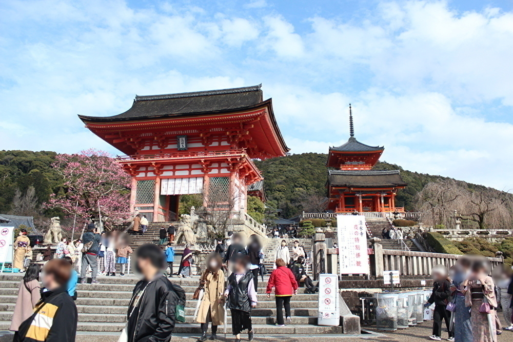
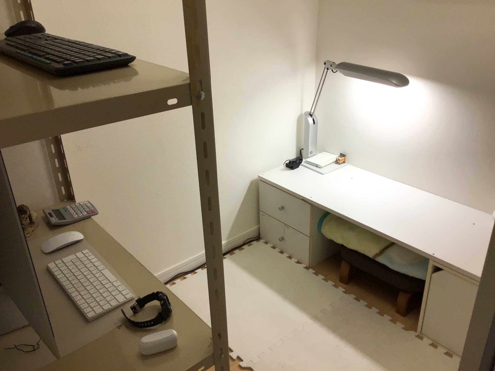

開発者について

努力は尊い
今勉強するかしないかで人生は変わる。
また、自分に厳しく行なう者が人生を得する。
私は人生をより良いものにしたい
だから、勉強する。
by 偏差値４０からの冒険
ここから開発者についてです☺️
どういう風に私について書けばいいのか
わからなかったので、質問形式で書きました。
※途中で冒険さんとありますが、
これは、偏差値４０からの冒険の略です。
質問ありがとうございます😊
私は日本に住む学生です＾＾
ちなみに年齢は非公開です🔒
質問ありがとうございます😊
私の好きなことは旅行することですね🚄
（特にお寺などの古い建物に行く旅行が好きですね☺️）
今年(2022年)の春に京都のお寺や四国のお寺に行き、今年の夏(2022)にも四国のお寺に行ったりしました。

ちなみに、スマホ📱の場合だと、上が清水寺で下が伏見稲荷大社です
PC💻の場合は、左が清水寺で右が伏見稲荷大社です
質問ありがとうございます😊
私の勉強環境は、１週間前まで(2022.12/10)は、リビングに小さな机を置いて勉強していたのですが、勉強環境を変えたいと思ったので現在はまた違う場所です。
どこかと言いますと、この前まで(2022.12/10)使っていた物置部屋の中です（笑）
物置部屋の荷物を別の部屋に持っていってそこに自分が来たって感じです。
現在の勉強部屋の中には、前にリビングで使っていた机と勉強教材が入っている本棚📚のようなものと配信用のPC🖥です。
